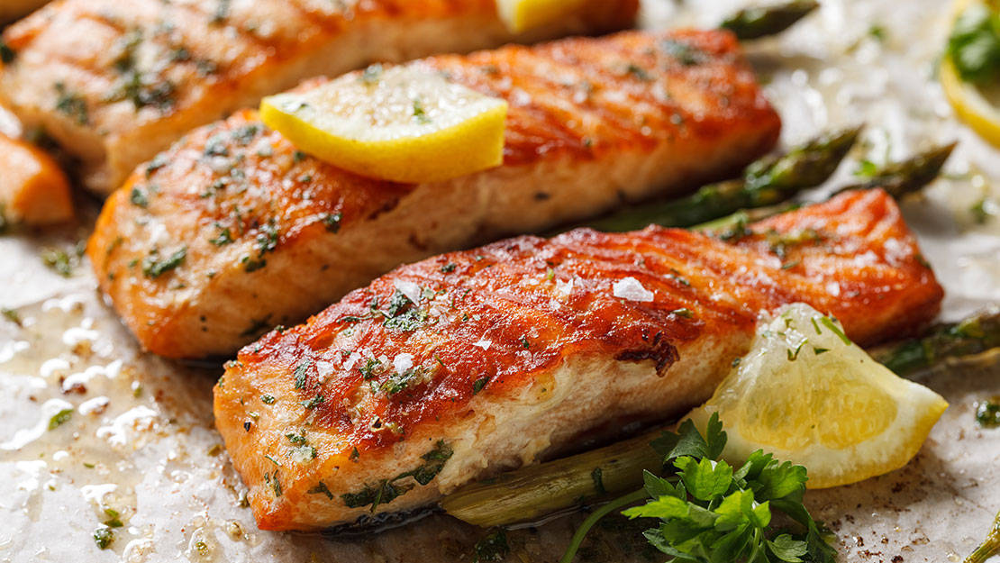

Baked salmon
Ingredients:
- 4 salmon fillets
- 1/4 cup melted butter
- 2 tbsp lemon juice
- 1 tbsp honey
- 1 tbsp chopped fresh dill
- 1/2 tsp salt
- 1/4 tsp black pepper
Steps:
- Preheat oven to 375°F.
- Combine melted butter, lemon juice, honey, dill, salt, and pepper in a bowl.
- Place salmon fillets in a baking dish and pour the mixture over the salmon.
- Bake for 12-15 minutes, or until salmon is cooked through.
- Enjoy!